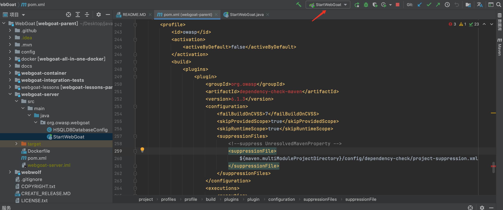

1.webgoat环境构建
下载webgoat
1 | git clone https://github.com/WebGoat/WebGoat.git |
看提示需要jdk15.
安装jdk15
https://www.oracle.com/java/technologies/javase/jdk15-archive-downloads.html
配置环境变量：
1 | export JDK15_HOME="/Library/Java/JavaVirtualMachines/jdk-15.0.2.jdk/Contents/Home" |
打开pom包下载完依赖。
启动webgoat
配置好运行环境，记得选用jdk15。点击绿色箭头启动即可。

本博客所有文章除特别声明外，均采用 CC BY-NC-SA 4.0 许可协议。转载请注明来自 h11ba1's blog！
 alipay
alipay


评论